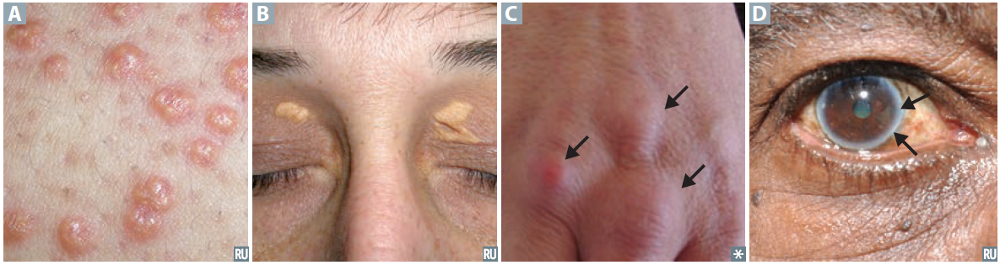

Cardiovascular Pathology
Hypertension
Hypertension (HTN) is defined as persistent systolic BP ≥ 130 mmHg and/or diastolic BP ≥ 80 mmHg. HTN can be classified by severity or etiology.
Severity:
- Pre-HTN: 120-139 mmHg or 80-89 mmHg
- Stage 1: 140-159 mmHg or 90-99 mmHg
- Stage 2: ≥ 160 mmHg or ≥ 100 mmHg
- Hypertensive urgency: severe HTN (≥ 180/≥ 120) without acute end-organ damage
- Hypertensive emergency: severe HTN wiht evidence of acute end-organ damage (e.g., encephalopathy, stroke, retinal hemorrhage and exudates, papilledma, MI, HF, aortic dissection, kidney injury, microangiopathic hemolyic anemia, eclampsia)
Etiology:
- Primary (essential): accounts for 90% of HTN, no identifiable cause; however, it tends to be familial and likely represetns an intersection of genetics with other factors, such as excessive salt intake and increased adrenergic teratogenesis
- Secondary: ↑ systemic arterial pressure as a result of other identifable conditions
- Renal
- Renal artery stenosis
- Renal parenchymal disease
- Drug-induced
- Oral contraceptives (OCP)
- Glucocorticoids
- Phenylephrine
- NSAIDs
- Endocrine
- Pheochromocytoma ‒ triad of HTN, diaphoresis, and tachycardia
- Primary aldosteronism (Conn Syndrome) – aldosterone‑producing tumor causes triad of HTN, hypokalemia, and metabolic alkalosis
- Hyperthyroidism
- Cushing syndrome
- Vascular
- Coarcation of the aorta
- Fibromuscular dysplasia
Risk factors: ↑ age, obesity, diabetes, physical inactivity, excess salt intake, ciagarette, family history; Af. Am. > Caucasian > Asian
Treatment:
- 1° HTN: lifestyle modification, medication (see examples below)
- Diuretics:
- Loop diuretics: furosemide (Lasix)
- Thiazide: hydrochlorothiazide
- Carbonic anhydrase inhibitors: acetazolamide, methazolamide
- K‑sparing diuretics: spironolactone, eplerenone (aldosterone antagonists), amiloride, triamterene (ENaC blockers)
- β‑adrenergic antagonists (β‑blockers): metoprolol,
- ACE inhibitors: lisinopril,
- angiotensin receptor blockers (ARBs): losartan
- calcium channel blockers:
- α‑adrenergic antagonists: prazosin
- 2° HTN: Treat the underlying cause. Can include weight loss, sodium restriction, smoking cessation, exercise, ↓ alcohol intake, and medications
Complications:
- Cardiac: CAD, LVH, heart failure, artrial fibrillation
- Large arterial: aortic dissection, aortic aneurysm
- Neurologic: stroke
- Renal: chronic kidney disease
- Opthalmologic: retinopathy
Hyperlipidemia
Hyperlipidemia (HLD) is defined as having elevated triglycerides (> 150 mg/dL) and cholesterol (> 200 mg/dL).[3] Signs of hyperlipidemia can include:
- xanthomas: plaques or nodules composed of lipid-laden histiocytes in skin, especially the eyelids (xanthelasma)
- tendinous xanthomas: lipid deposits in tendons, especiallly Achilles
- cornea arcus: lipid deposits in cornea. Commonly in elderly (arcus senilis), but appears earlier in life wiht hypercholesterolemia

Figure 1. Signs of Hyperlipidemia. (A) Lipid-laden histiocytes in skin. (B) Xanthelasma. (C) Lipid deposits in tendon. (D) Arcus senilis. [source: First Aid Step 1 (2020)]
Etiology: Usually multifactorial, secondary to other causes
- Lifestyle ‒ high intake of saturated &/ trans fats, physical inactivity
- Medications ‒ high-dose diuretics, cyclosporine, amiodarone, steroids, protease inhibitors
- Medical conditions ‒ eating disorders (e.g., anorexia), cholestatic liver disease (e.g, PBC, biliary obstruction), obesity, nephrotic syndrome, hypothyroidism, Cushing syndrome, pregnancy
Treatments: lipid-lower agents
- HMG-CoA reductase (atorvastatin, simvastatin, etc.) ‒ primarily for lowering LDL
- Bile acid resins (cholestyramine, colestipol, colesevelam)
- Eztimibe
- Fibrates (gemfibrozil, bezafibrate, fenofibrate) ‒ primarily for lower triglycerides; careful when using w/ HMG-CoA reductase inhibitors b/c 50% chance of rhabdomyolysis
- Niacin
- PCSK9 inhibitors
- Fish oil and marine omega-3 fatty acids
Complications: Hepatic steatosis, hypertriglyceridemia-induced pancreatitis,[3] atherosclerosis (& related CV events)
Ischemic Heart Disease (IHD)
Ischemic heart disease (IHD) occurs when myocardial oxygen demand exeeds oxygen supply. While this often involves an interruption of arterial blood flow to the heart, such as atherosclerotic narrowing of coronary a.a. (called coronary artery disease, CAD), it may also be a consequence of profound anemia.
Risk factors include: HTN, family hx, smoking, hypercholesterolemia (LDL > 160 mg/dL or HDL < 35 mg/dL), diabetes mellitus, age (M > 45 or F > 55/postmenopausal), tobacco.
IDH can present as angina pectoris or myocardial infarction (MI). Angina pectoris can be divided into 3 subtypes:
- Stable angina,
- Unstable angina, and
- Prinzmetal (vasospastic) angina.
MI can be divided into ST-segment elevation MI (STEMI) or non-STEMI (NSTEMI). The term acute coronary syndrome (ACS) refers to unstable angina and both types of MI.
Table 1. Classification of Angina & ACS
| Angina Pectoris |
Acute Coronary Syndrome (ACS) |
Chronic Coronary Syndrome |
Stable
Vasospastic
Unstable |
Unstable angina
STEMI
NSTEMI |
Same as stable angina |
Stable Angina (Chronic coronary syndrome)
Stable angina typically presents as predictable exertional chest pain, relieved by rest, in older men over a period of 2 months. The pain radiates over the left arm and is associated with dyspnea (shortness of breath, SOB). Labs show normal troponin, and normal ECG.
Pathophysiology: stable plaque w/ vessels (typically coronary a.a.) unable to dilate adequately
Risk factors: diabetes, HTN
Treatments: aspirin, statins, anti-anginal meds (e.g., β‑blockers, Ca blockers, ± nitroglycerin)
- Aspirin as blood-thinner to reduce chance of clotting
- Statins to lower LDL
- β‑blockers to decrease HR and contractility ⇒ ↓ cardiac output and O2 consumption
- Ca blockers to decrease muscle tone/contractility (DHP‑type on vascular smooth muscle, non‑DHP on cardiac muscle)
- Nitrates are smooth muscle relaxants ⇒ vasodilation
Unstable angina
Unstable angina can present new angina occuring at rest or change in symptoms without elevated lab works (troponin, D-dimers, etc.). ECG may be normal, ST depression, or T-wave inversions.
Pathophysiology: plaque ruptures, thrombus causing new partial occlusion (no infarct)
Treatments: aspirin, nitrates, β‑blockers, statins
- Aspirin as blood-thinner to reduce chance of clotting
- Nitrates are smooth muscle relaxants ⇒ vasodilation
- β‑blockers to decrease HR and contractility ⇒ ↓ cardiac output and O2 consumption
- Statins to lower LDL
Prinzmetal (vasospastic) Angina
Myocardial Infarction (MI)
ST-segment elevation myocardial infarction
Non-ST-segment elevation myocardial infarction
Heart Failure
Heart failure (also called congestive heart failure, HF or CHF) is defined as the inability of the heart to generate sufficient cardiac output (CO) to meet the metabolic demands of the body. It is the a syndrome or diagnosis, not a specific disease. HF can divided as divided as follow:
- Left-sided heart failure
- Heart failure with reduced ejection fraction (HFrEF)
- Heart failure with preserved ejection fraction (HFpEF)
- Right-sided heart failure
Heart failure is defined by decreased cardiac output due to increased LV EDP causing early the mitral valve closure and increased left atrial pressure. Patients with heart failure often present with fatigue, dyspnea, pulmonary edema, and rales/crackles.🔴 Clinically, heart failure can be classified in 2 ways: (1) heart failure with reduced ejection fraction (HFrEF) vs. heart failure with preserved ejection fraction (HFpEF) and (2) left-sided vs. right-sided heart failure. Reduced ejection fraction is defined as having ≤ 40%, and normal ejection fraction is 50‑60%. Values in between are defined as having mildy reduced EF (mrEF). Physiologically, HFrEF corresponds to systolic dysfunction, and HFpEF corresponds to diastolic dysfunction.
Table 2. Signs and Symptoms of Heart Failure
| Left-sided HF |
Both |
Right-sided HF |
S3 gallop
Ventricular heave
Orthopnea
Paroxysmal noctural dyspnea (PND) |
Fatigue
Dsypnea
Pulmonary edema
Rales/crackles |
S4 gallop
Jugular venous distention
Peripheral edema
Hepatomegaly (nutmeg liver) |
Left-sided Heart Failure
Right-sided Heart Failure
The most commmon cause of RHF is LHF. Other causes include cor pulmonale (RHF due to pulmonary HTN) and pulmonary or tricuspid valve disease.
Atherosclerosis
References
- First Aid for the USMLE Step 1 2020
- First Aid for the Basic Sciences - Organ Systems
- AMBOSS Library